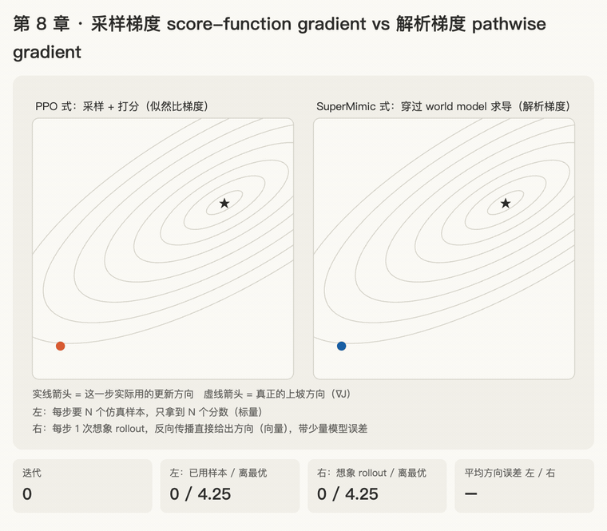
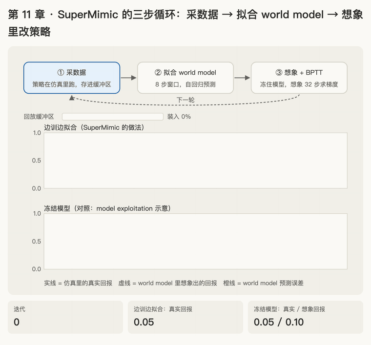

机器人运控与强化学习 · 讲义目录
在线阅读：https://wikieden.github.io/robot-motion-rl/ · 全部讲义书：https://wikieden.github.io/ai-books/
英文名 RL for Robot Motion Control。《从零学强化学习》的续篇。
18 章（第一部分 11 章 + 第二部分 7 章）· 18 个动画（GIF + 可交互页面）· 36 张复习卡片 · 覆盖 SuperMimic（arXiv 2610.28480）全文，legged_gym、DeepMimic、BeyondMimic、SONIC、GRPO 相关论文的运控主线，以及 Underactuated Robotics 的 LQR / 人形 / 轨迹优化、凸 MPC + WBIC、MPPI、AMP、SHAC、ASAP
这本书讲什么
从「策略到底输出什么」讲起：运控的三层和 PD 目标接口，把模仿人类动作写成 MDP，PPO 在几千个并行机器人上的配方，仿真到真机，动作模仿的采样技巧；再看清两件事：GRPO 为什么不适合底层运控，PPO 为什么「动作越多越要堆算力」；最后用两种梯度、可微 world model、BPTT + critic 三章，一步步拼出 SuperMimic：1 张 GPU 训 3 小时，超过 128 张 GPU 训 7 天的跟踪器。第二部分（第 12–18 章）补上两样东西：经典控制这条路（LQR、线性倒立摆与 ZMP、凸 MPC + WBC、iLQR 与 MPPI），作为理解「学习在省什么」的参照；以及学习路线的三块拼图（AMP 风格奖励、SHAC 可微仿真、上真机）。
- 适合谁：读完《从零学强化学习》（至少第 20–24 章：策略梯度、baseline、GAE、PPO、GRPO）的人。机器人只要知道「关节、电机、传感器」；PD 控制、高斯分布、重参数化、链式法则、线性化、双曲函数、雅可比都在用到的那一章现场补。
- 读完能做什么：读懂 SuperMimic、BeyondMimic、legged_gym 的方法和超参表；解释为什么一个人形跟踪器要那样设计奖励、终止、重置和梯度；对一个运控问题判断该用 PPO、GRPO、MPC 还是可微 world model；自己推 LQR 的 Riccati 迭代、ZMP 和捕获点、摩擦锥约束；动手做 学习计划 的 MC-M8（手写 PPO）、MC-M12（GRPO 对照）、MC-M16（小规模 SuperMimic）。
- 怎么读：按章顺序读。每章先看讲解和动画，再自己做练习，最后用复习卡片隔几天考自己。
讲解的特点
- 一次一小步：每个概念按「白话类比 → 公式（每个符号说清楚怎么读）→ 小数字亲手算一遍」讲。
- 每章一个动画：PD 跟踪、奖励核、高斯比率、域随机化、重置分布、信用分配、算力账、两种梯度、world model 滚动、BPTT 视野、三步循环、LQR、倒立摆与捕获点、滚动优化、MPPI、AMP、接触导数、动作修正量，都能播放、单步、拖滑块。
- 对照原文：讲到论文的地方标本地文本行号（如 SuperMimic L278–L281），论文文本在
cs285-deep-rl/materials/text/papers/。 - 算账不含糊：SuperMimic「省 1000 倍」怎么算、哪里不公平、扣掉后还剩多少（第 7 章）；玩具例子出了和讲义说法矛盾的数，就改例子，不改结论。
- 术语不设门槛：缩写第一次出现就给英文全称并逐词解释，全书缩写见 缩写与术语表。
- 每章都有代码对照：只用 NumPy，Mac 上直接跑，配测试核对和讲义一致；只算讲过的例子，不提前给练习答案。
- 每章收尾有口诀：全部口诀汇总在本页末尾。
示例动画
 |
 |
 |
| 第 1 章 低增益 PD：目标角其实是力矩旋钮 · 讲义 · ▶ 交互 | 第 6 章 GRPO 整条打分，惩罚摊薄；PPO 逐步打分，惩罚落在踩错那步 · 讲义 · ▶ 交互 | 第 8 章 采样梯度弯弯绕绕，解析梯度几乎直线 · 讲义 · ▶ 交互 |
 |
 |
 |
| 第 7 章 21504 vs 3 GPU 时，扣掉数据和硬件还剩 564 倍 · 讲义 · ▶ 交互 | 第 10 章 视野越长梯度越不稳，critic 补上视野外 · 讲义 · ▶ 交互 | 第 11 章 采数据 → 拟合模型 → 想象里改策略 · 讲义 · ▶ 交互 |
可交互页面要用本地服务打开才能拖滑块：.claude/launch.json 里的 robot-motion-rl-animations（端口 8354），见 animations/README.md。
其他入口
- 复习卡片：M01–M36，每章 2 张。
- 运控调研：同一主题的综述版（PPO 配方、GRPO 实证、SuperMimic 精读、高效学习清单）。
- 学习计划：阶段 0–I、里程碑 MC-M0–MC-M19。
- 代码对照：solutions/chapter-code/。
全书地图
《从零学强化学习》第 20–24 章：策略梯度 → baseline → GAE → PPO → GRPO
│
第 1 章 三层与 PD 接口 ──► 第 2 章 动作跟踪的 MDP ──► 第 3 章 PPO 运控配方
│ │
└──► 第 4 章 仿真到真机 ◄────────────────────────┘
│
第 5 章 动作模仿与采样
│
┌────────────┴─────────────┐
第 6 章 GRPO 不适合底层运控 第 7 章 规模化的代价（PPO 扩数据 = 扩算力）
│
第 8 章 两种梯度（似然比 vs 解析）
│
第 9 章 可微 world model
│
第 10 章 BPTT + critic
│
第 11 章 SuperMimic 全流程
第二部分：经典控制作参照 + 学习路线补全
第 12 章 LQR ──► 第 13 章 LIPM + ZMP ──► 第 14 章 凸 MPC + WBC ──► 第 15 章 iLQR + MPPI
（第 1 章的 PD 之上） （占第 1 章「中层」的位置） （第 8 章两种梯度的在线版）
第 16 章 AMP（接第 5 章） 第 17 章 SHAC（接第 10 章） 第 18 章 上真机（接第 4 章）
| 步 | 做什么 | 为什么 | 在第几章 |
|---|---|---|---|
| 定接口 | 策略 50 Hz 输出设定值，PD 1 kHz 出力矩 | 策略不直接管电机；低增益下设定值是力矩代理 | 1 |
| 写 MDP | 本体感知 + 未来参考 → 29 个设定值；exp 核奖励；高度 / 倾斜终止 | 把「像人一样动」变成可优化的分数 | 2 |
| 训练 | 高斯策略 + PPO，几千环境并行，按 KL 调学习率 | 并行抵消 PPO 的低样本效率 | 3 |
| 上真机 | 域随机化、非对称 critic、teacher-student、sim context | 仿真参数和真机不一样 | 4 |
| 练难点 | RSI、提前终止、按回报重置 | 动作库大、难点在中间 | 5 |
| 选算法 | 长时域稠密奖励用 PPO，一次决策一个分才用 GRPO | 信用分配 | 6 |
| 看瓶颈 | 每条动作都重新摸索同一副身体的物理 | PPO 扩数据就是扩算力 | 7 |
| 换梯度 | 似然比 → 解析梯度 | 每个样本带回方向，方差小 | 8 |
| 学模型 | 确定性、以 ξ 为条件、8 步自回归、生存权重 | 仿真器不可导 | 9 |
| 想象训练 | 32 步 BPTT + critic + 梯度双重裁剪 | 长视野会爆炸，短视野要 critic | 10 |
| 拼起来 | 采数据 → 拟合 → 想象改策略，每轮都转 | 三个提速因素相乘 | 11 |
| 对照：有模型时 | LQR 闭式解；ZMP 与捕获点；凸 MPC 30 Hz + WBC 500 Hz；iLQR / MPPI 在线优化 | 看清 RL 在省什么、付什么 | 12–15 |
| 补全学习路线 | 风格奖励（AMP）、可微仿真（SHAC）、执行器网络 / 动作修正 / sim2sim | 没参考片段、梯度从哪来、怎么上真机 | 16–18 |
目录
| 章 | 主题 | 一句话精要 | 动画 | 卡片 | 状态 |
|---|---|---|---|---|---|
| 第一部分 | 从 PPO 到 SuperMimic | ||||
| 1 | 三层与 PD 目标接口 | 策略 50 Hz 给设定值，PD 1 kHz 出力矩；低增益时设定值是力矩旋钮 | 01 | M01–M02 | 正文 ✅，练习待作答 |
| 2 | 把动作跟踪写成 MDP | 930 维本体感知 + 10 帧参考；exp(−e²/σ²) 奖励核；偏高倒斜就终止 | 02 | M03–M04 | 正文 ✅，练习待作答 |
| 3 | PPO 运控配方 | 高斯策略的 log 概率与比率；4096 × 24 一批；KL 自适应学习率 | 03 | M05–M06 | 正文 ✅，练习待作答 |
| 4 | 从仿真到真机 | 域随机化买的是稳；特权信息给 critic 或 teacher；ξ 喂给模型 | 04 | M07–M08 | 正文 ✅，练习待作答 |
| 5 | 动作模仿与采样 | RSI 从中间开局；摔了就停；50/40/10 按回报重置 | 05 | M09–M10 | 正文 ✅，练习待作答 |
| 6 | GRPO 为什么不适合底层运控 | 整条打分 vs 逐步打分；惩罚摊成 1/T；GRPO 留给 VLA 微调 | 06 | M11–M12 | 正文 ✅，练习待作答 |
| 7 | 规模化的代价 | 21504 vs 3 GPU 时；扣掉后仍 564×；PPO 加卡不变聪明 | 07 | M13–M14 | 正文 ✅，练习待作答 |
| 8 | 两种梯度 | 似然比只看分，解析沿路求导；同一模型里省 64 倍 | 08 | M15–M16 | 正文 ✅，练习待作答 |
| 9 | 可微 world model | 已知随机性当输入；8 步自回归纠偏；生存权重让摔倒可导 | 09 | M17–M18 | 正文 ✅，练习待作答 |
| 10 | 在想象里训练 | 雅可比连乘会爆炸；32 步 BPTT + critic；梯度双重裁剪 | 10 | M19–M20 | 正文 ✅，练习待作答 |
| 11 | SuperMimic 全流程 | 三步循环、一次迭代的账、三个提速因素、局限与选路线 | 11 | M21–M22 | 正文 ✅，练习待作答 |
| 第二部分 | 经典控制作参照 + 学习路线补全 | ||||
| 12 | LQR | 线性 + 二次时 Bellman 有闭式解；Riccati 迭代；q 管偏离、r 管用力 | 12 | M23–M24 | 正文 ✅，练习待作答 |
| 13 | 线性倒立摆与 ZMP | ẍ = ω²(x − p)；按 cosh 发散；捕获点 ξ = x + ẋ/ω | 13 | M25–M26 | 正文 ✅，练习待作答 |
| 14 | 单刚体凸 MPC 与 WBC | 机身当砖头；摩擦锥锁住 μg；滚动优化；τ = Jᵀf | 14 | M27–M28 | 正文 ✅，练习待作答 |
| 15 | iLQR 与 MPPI | 沿轨迹线性化 + LQR 反推；撒序列 + exp(−代价/λ) 加权；在线 vs 离线 | 15 | M29–M30 | 正文 ✅，练习待作答 |
| 16 | AMP | 判别器打分当风格奖励；r_S = max(0, 1 − 0.25(D−1)²)；任务风格各一半 | 16 | M31–M32 | 正文 ✅，练习待作答 |
| 17 | SHAC 与可微仿真 | 硬接触导数跳变、softplus 磨平；32 步窗口 + critic；梯度从仿真器还是模型来 | 17 | M33–M34 | 正文 ✅，练习待作答 |
| 18 | 上真机 | 四类差距；执行器网络；ASAP 动作修正量；sim2sim 与上机清单 | 18 | M35–M36 | 正文 ✅，练习待作答 |
| 附录 | 缩写与术语表 | 全书缩写、记号、论文名 | — | — | ✅ |
后续大纲
全书 18 章正文已写完。接下来按学习的进度：
- 各章练习作答后，把答错、卡住的地方补成卡片（M37 起）。
- 学习计划的动手里程碑（MC-M0–MC-M19）做完后，把实验结果补进对应章节的「自己改一改」或附录。
- SuperMimic 若公开代码，补一章「读源码」，对照第 9–11 章。
口诀汇总
第 1 章
高层想、中层定、底层出力：VLA 几赫兹、策略五十赫兹、PD 一千赫兹；
弹簧拉向目标、阻尼刹住速度，力矩到顶就截平；
增益调低关节软，负载压出一截差，目标角变成力矩钮。
第 2 章
闭眼跳舞靠本体：关节、速度、IMU、上一步，十帧历史补看不见；
跟着老师看十帧，输出二十九个设定值；
误差进核零到一，加权求和乘 dt；
偏高倒斜就终止，正分拿不到，自然学会别摔。
第 3 章
连续动作投飞镖：瞄准 μ、手抖 σ，log 概率三项加；
比率 log 相减再 exp，过了一点二就剪平；
四千个环境二十四步，切四份看五遍；
KL 超两倍降一点五，低一半升一点五。
第 4 章
冰上学会地毯摔，只练一处只会一处；
每局换个参数练，处处过得去，买的是稳不是最优；
教练知道地滑不滑：给 critic 看，或 teacher 教 student；
已知的随机告诉模型，模型就能是确定的。
第 5 章
跳舞照视频，奖励就好写；
难处在中间，随机开局才练得到；
摔了就喊停，躺着的样本不要；
一半均匀保底，四成押最差，一成照顾学会的。
第 6 章
同题答几遍，组平均当 baseline，整条共享一个分；
踩空一脚晃几下才摔，错在那一脚，不在后面晃；
critic 看出局面何时变坏，惩罚落在那一步；
长时域稠密奖励用 PPO，成功失败一个分才轮到 GRPO。
第 7 章
扩动作两条路：专家蒸馏有损，通用策略烧卡；
一百二十八卡七天两万一，一卡三时，差七千；
扣掉数据二点三、硬件五点五，还剩五百多；
同一副身体，PPO 每条重摸一遍，加卡不变聪明。
第 8 章
调糖两办法：冲几杯尝分数，或按公式求导数；
似然比只看分，黑箱能用，方差大，靠样本压；
解析沿路求导，每个样本带方向，要环境可微；
同一模型比一比，解析省六十四倍。
第 9 章
收音机拆不开，听反应画近似图，同一副身体一个模型；
知道的随机当输入、在外加，推搡学不了就去掉；
闭眼走路误差滚，八步自回归逼它纠偏；
摔倒变概率，生存权重连乘，开关变旋钮。
第 10 章
多米诺连乘，H 长就爆炸或消失；
前三十二步精确求导，后面交给 critic 估；
没有 critic 只看眼前，推一把就站不稳；
确定策略没噪声可压，梯度先缩总量再截单个。
第 11 章
上路采数据、更新车感、躺床上演练，三步每轮都转；
旧数据照样能用，物理不看是谁采的；
缓冲四百万、每轮想十三万，一共四百多亿步；
共享模型、想象快、梯度准，三样乘起来就是几百倍。
第 12 章
院子当平地，平衡点附近拉直线；
二次代价配线性模型，价值是抛物线、策略是一条直线；
Riccati 反复代，几步就收敛，P 是价值、K 是策略；
q 在乎偏离、r 舍不得用力，离平衡点远了就不灵。
第 13 章
公交车上压前脚，地面托你那一点叫 ZMP，只能在脚底；
人压成一个点，质心在 ZMP 哪边就往哪边加速；
歪了按 cosh 倒，脚底挪不够就得迈步；
位置加速度除以 ω，踩在捕获点就停住。
第 14 章
机身当砖头，只算每只脚推多大，问题变凸；
只推不拉、不能太斜，摩擦锥把加速度锁在 μg；
看一段、走一步、再重看，三十赫兹滚着解；
力乘雅可比转置变力矩，WBC 五百赫兹顾全身。
第 15 章
不练本能现规划，求一串控制量；
iLQR 沿轨迹线性化，LQR 往回推，三遍就收敛；
MPPI 撒一把，exp 负代价除 λ 加权平均，不要导数好并行；
在线现算是 MPC，离线学好是 RL。
第 16 章
跟踪逐帧照视频，AMP 只求看着像；
裁判把真的推向一、假的推向负一，分不清时就像了；
一减四分之一 (D−1)²，截到零，D 越近一分越高；
任务风格各一半，互相牵制不跑偏。
第 17 章
收音机给了电路图，仿真器自己出导数；
脚在空中导数零，一碰地跳到负一千，策略学不会踩；
softplus 把台阶磨成坡，导数连续，代价是隔空有力；
SHAC 对真仿真求导要磨平，SuperMimic 对学的模型求导随便用。
第 18 章
模拟器学会真车开：电机、参数、延迟、传感四处差；
电机写不准就学一个网络，塞回仿真里；
方向盘打三十真车转二十四，学个 Δa 把手感对齐，练完再拿掉；
换个试车场先跑一圈，接口观测随机延迟安全，逐项核对再上机。